SAE Notification · Permission Management
SCR-PRJ-011 · SCR-RBAC-001·002·003·004·006 · Notification recipients · Roles · Permissions · Assignments · History
SAE Notification
- 1.1Screen layout
- 1.2Adding recipients and saving
1.1Screen layout
Overview
Use this screen to set who receives an email when a serious adverse event (SAE) occurs, and to check the results of the emails that were sent. Nobody sends these emails by hand. As soon as an adverse event’s “SAE status” changes from “No” to “Yes”, the system sends the email automatically. The field that serves as the “SAE status” is set on the AE Designation screen. This screen only handles who receives the email.
Screen guide
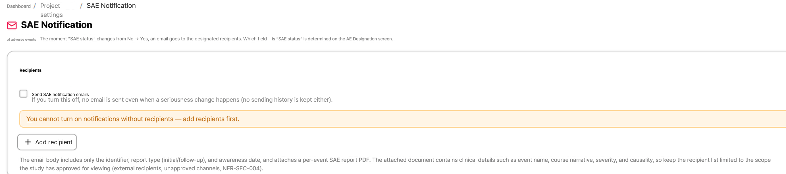
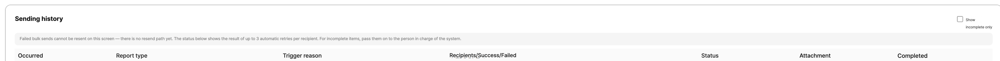
“Send SAE notification emails” — turns the notification on and off. You cannot turn it on if there are no recipients (see Precautions below).
“Show incomplete only” — shows only the notifications whose sending has not finished.
The subtitle under the screen title states the trigger condition: “An email is sent to the designated recipients the moment an adverse event’s ‘SAE status’ changes from No → Yes.”
The meaning of the off state — “If you turn it off, no email is sent even when the seriousness changes (no sending history is recorded either).” Not even a history is left, so keep this in mind.
Yellow notice — says that the notification cannot be turned on because there are no recipients. Once you add a recipient, the wording in the same spot changes 1.2.
A paragraph that explains what the email contains — the body holds only the identifier, the report type and the awareness date, but the attached SAE report contains the clinical details as they are (see Precautions in 1.2).
Sending history — each automatic send is added as one row. The screenshot shows “No notifications have been sent.” because nothing has been sent yet.
Gray notice — “You cannot resend a failed notification from this screen — there is no resend path yet. The status below shows the result of up to 3 automatic retries per recipient. Please pass incomplete notifications on to the system administrator.”
Sending history columns
| Column | Contents |
|---|---|
| Occurred · Report type | Time the notification was sent · Initial report or Follow-up report |
| Trigger reason | Seriousness change (No → Yes) or Content change |
| Recipients/Succeeded/Failed | Number of recipients sent to, and number of successes and failures |
| Status | All sent · Partially failed · All failed · No recipients |
| Attachment · Completed | SAE report file · Time when processing finished |
Precautions
Must check Data corruption · Form cannot be completed
- • You must add recipients before you can turn on the notification. If you select only “Send SAE notification emails” while there are zero recipients and save, the save is rejected, because a notification with no one to receive it has no purpose. The order is not add recipients → save → check → save. Instead, add the recipients, check the box, and save once 1.2. Also, no history is recorded while the notification is off, so it is safer to turn it on before operations begin.
1.2Adding recipients and saving
Overview
Enter the people who should receive the notification, one person per row. Each row has two fields, Email and Display name. After you have entered everyone, click “Save”; nothing takes effect until you do. When at least one recipient is added, the card title changes to “Recipients (N)”, and the yellow notice above is replaced with different wording.
Screen guide

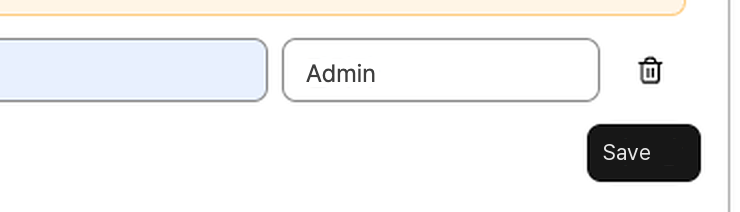
Email — the address that receives the notification. Addresses that differ only in capital or lowercase letters are treated as the same address and flagged as duplicates.
“+ Add recipient” — adds one more empty row. Repeat this to enter several recipients.
Display name — a label that shows who the address belongs to (the screenshot uses “Admin”).
Delete (trash can) — removes that row. If you try to delete the last recipient, you are asked to confirm once more.
“Save” — saves the notification on/off setting and the recipient list together. If you do not click it, nothing is applied.
The card title has changed to “Recipients (1)” — check here to see how many recipients are registered.
The yellow notice has been replaced with different wording: “This list is not updated automatically — it stays as it is even when the person in charge changes or leaves. If roles change, please clean it up yourself.” (see Precautions below)
Precautions
Must check Data corruption · Form cannot be completed
- • The system does not manage this list for you, so you have to clean it up yourself. Even if the person in charge changes or leaves, the addresses stay and notifications keep going to them. However, the SAE report attached to each notification contains clinical details as they are, such as the event name, the clinical narrative, severity and causality. In other words, this list defines who can see that information. The paragraph below the screen explains this, so keep the list within the scope the study has approved for access, and check it together at every handover. External addresses and shared mailboxes need particular care.
Role list and management
- 2.1Screen layout
- 2.2Row action menu
- 2.3New custom role
- 2.4Import role set
2.1Screen layout
Overview
This screen shows, in one view, which roles are used in this project and how many people each role is assigned to. There are two kinds of roles: the five default roles that the system defines in advance, and custom roles created in the project. Default roles cannot be deleted or deactivated; only their permissions can be adjusted.
Screen guide
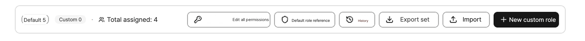
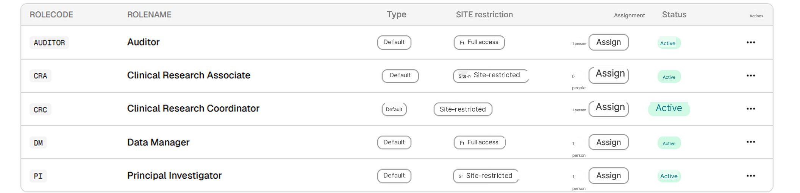
“Edit all permissions” — shows all permissions for the five roles in one table 4.1. If you do not have edit rights, the label changes to “View all permissions”.
“Default role reference” — a read-only screen that explains the original purpose of the five default roles 4.2.
“History” — shows when and how roles and assignments were changed 4.3.
“Export set” — saves the current role and permission setup as a file. It is used as a snapshot for audit responses.
“Import” — applies an exported file to another project 2.4.
“+ New custom role” — creates a role that is used only in this project 2.3.
“Assign” — assigns that role to a person. Clicking it moves you to the assignment screen, where the assignment window opens automatically with the role already selected 3.2.
⋯ — opens the action menu for that role 2.2.
Summary — number of default roles · number of custom roles · total number of people assigned.
The table has 7 columns — ROLECODE · ROLENAME · Type · SITE restriction · Assignments · Status · Actions.
Type — Default (provided by the system) or Custom (created by you).
SITE restriction — Site-restricted shows only the data of the participant’s own site, and Full access shows the whole project.
Status — a deactivated role changes status here and cannot be used for new assignments.
Precautions
Easily misunderstood behavior
- • Only the workspace administrator can change roles. The screen also opens for principal investigators and data managers, but “Import” and “+ New custom role” are not shown at all, and “Edit all permissions” changes to “View all permissions”. A button that does not appear is not a fault; it is normal behavior based on permissions. Also, in a closed or archived project, the buttons appear dimmed and disabled. They are shown differently from hidden buttons because they can be used again when the project status changes.
2.2Row action menu
Overview
There are three things you can do for a role row. The first two are navigation; only the last one actually changes something. The menu applies only to the row you clicked, so check first which role’s ⋯ you pressed.
Screen guide
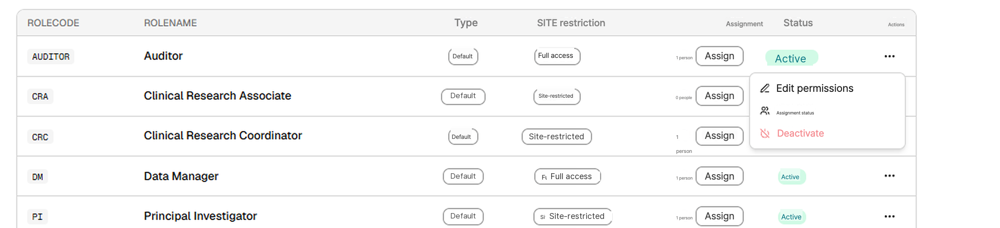
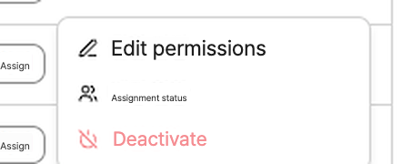
⋯ — opens the menu for that row. Click it again or click outside to close the menu.
“Edit permissions” — goes to the screen for editing that role’s permissions only. To view several roles at once, use “Edit all permissions” at the top 4.1.
“Assignment status” — goes to the screen showing who is assigned to that role 3.1.
“Deactivate” — stops that role from being used. It is dimmed in the screenshot (see Precautions below).
Check which role the opened menu belongs to, on the left. The screenshot shows the Auditor row.
Precautions
Must check Data corruption · Form cannot be completed
- • Default roles cannot be deactivated. The dimmed “Deactivate” in the screenshot is not a fault: Auditor is one of the five default roles. When you hover the mouse over the button, “Default roles cannot be deactivated” appears. “Deactivate” is enabled only for custom roles that are still active, and it is also disabled in closed or archived projects. If you do not want to use a default role, do not deactivate it; simply do not assign anyone to that role.
2.3New custom role
Overview
Create a role that is used only in this project when the five default roles are not enough. For example, use it when you need a combination that is not among the default roles, such as an observer with read-only access. Here you create only the empty shell of the role. You decide which permissions to grant after creating it, on the permission edit screen 4.1.
Screen guide
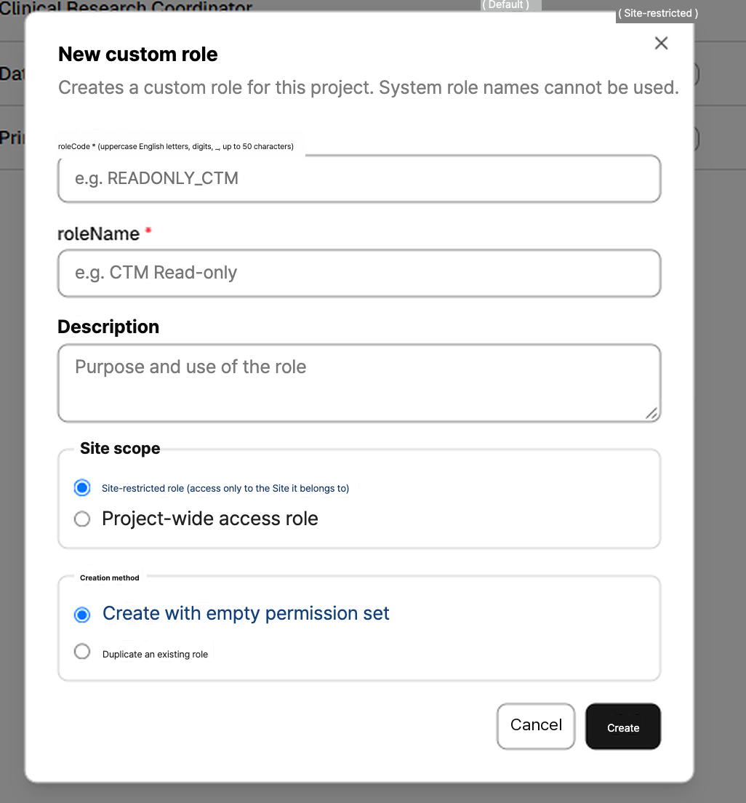
roleCode — the code that identifies the role. You can use only uppercase English letters, numbers and underscores (_), up to 50 characters (e.g., READONLY_CTM).
roleName — the name shown on screen (e.g., CTM Read-only).
Description — write down why this role was created. It is a field for people who look at it later.
Site scope — a Site-restricted role sees only the data of its own site, and a project-wide access role sees all sites. After creation, this setting decides the nature of the role, so choose it carefully.
Creation method — “Create with empty permission set” starts the role with no permissions at all, and “Duplicate an existing role” starts it with the permissions of the role you select.
“Create” — creates the role. It is added to the list as a row whose Type is “Custom”.
The window description states the restriction: “Creates a project-level custom role. System role names cannot be used.”
The input rule is written beside the label: “(uppercase English letters, numbers, _ · 50 characters)”.
Precautions
Must check Data corruption · Form cannot be completed
- • You cannot use the same name as a default role. If you enter a name that the system uses, such as PI · CRC · CRA · DM · AUDITOR, in roleCode, it is rejected, and entering a code that already exists is also rejected. In both cases, the reason is shown beside the roleCode field. Also, if you choose “Create with empty permission set”, the role cannot do anything right after it is created. If you assign a person to it before giving it any permissions, that person cannot open any screen, so follow this order: create → edit permissions → assign.
2.4Import role set
Overview
Apply a file that was saved with “Export set” in another project to this project. Use it when you repeat the same setup across several studies. Applying changes permissions immediately, so do not apply right away. Go through the preview step first: check what will change, then apply.
Screen guide
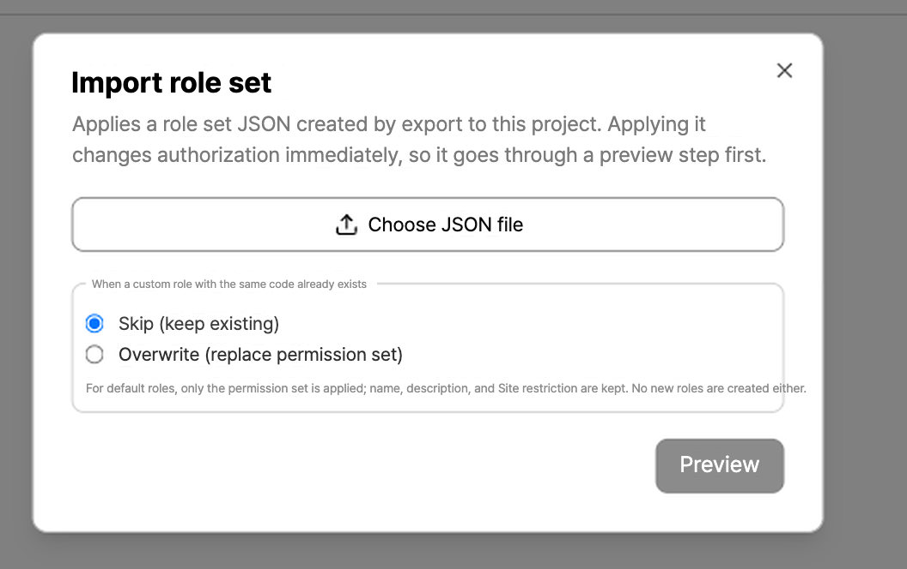
“Choose JSON file” — pick the file created by the export. You cannot move to the next step until you pick one.
When a custom role with the same code already exists — Skip keeps the existing role as it is, and Overwrite replaces its permission set with the one in the file.
“Preview” — check what will change first. Until you choose a file, it stays dimmed and cannot be clicked.
The window description explains the procedure: “Applying changes authorization immediately, so it goes through a preview step.”
Default roles are an exception, as the guidance says: “For default roles, only the permission set is applied. Their name, description and site restriction are kept. Default roles are not newly created either.”
Precautions
Must check Data corruption · Form cannot be completed
- • Apply right after you have reviewed the preview. If another person changes the role between the preview and the apply, the whole apply is rejected, and “The target role was changed after the preview. Nothing has been applied — please run the preview again.” is shown. Nothing is ever partly applied, so you do not need to worry about an intermediate state; just start again from the preview. Also, “Overwrite” is hard to undo, so before applying, it is safer to save the current setup first with “Export set”.
Role assignments
- 3.1Assignment list
- 3.2New role assignment
3.1Assignment list
Overview
This screen manages who joins this project in which role. The role list handles the definition of roles, while this screen handles the link between people and roles. For one person you can set a site in charge and a validity period together, so the assignment stops taking effect automatically when the period ends.
Screen guide
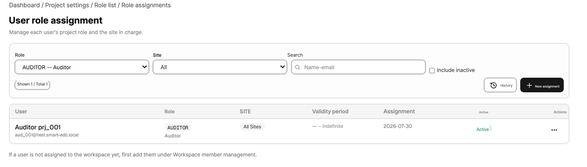
Role filter — shows only the assignments of a specific role. If you come in with “Assign” from the role list, that role is already selected. You can also use the Site filter and search (name or email) next to it.
“Include inactive” — also shows assignments that have been released. Usually leave it off, and turn it on only when you want to check past assignments.
“History” — shows when the assignments changed 4.3.
“+ New assignment” — opens the assignment window 3.2.
⋯ — the action menu for that assignment.
Subtitle — “Manages project roles and site in charge for each user.”
Showing N / Total N — the number after filtering and the total number.
The table has 7 columns — User · Role · SITE · Validity period · Assignment · Active · Actions. The User column shows name and email together.
Validity period — if no period is set, it shows “— ~ Indefinite”. The screenshot is in that state.
Bottom notice — the guidance shown when the person you want to assign is not in the list. You cannot assign someone who is not a workspace member, so first add them in workspace member management (see Precautions below).
Precautions
Easily misunderstood behavior
- • People who are not workspace members cannot be assigned. The user list in the assignment window shows only workspace members, so a person who is not yet a member does not appear at all. Follow the link in the notice below the screen to add them first in workspace member management, then come back and assign. If the person you are looking for is not in the “User selection” list, it is most likely because they are not a member, not because the name was mistyped.
3.2New role assignment
Overview
This is the window for attaching a role to one person. Choosing only a user and a role completes the assignment; set the site in charge and the validity period only when needed. If you came in with “Assign” from the role list, the role is already filled in, so you only need to choose the person. The screenshot shows that state.
Screen guide

User (workspace member) — choose the person to assign. Only workspace members appear in the list (see Precautions in 3.1).
Role — choose the role to assign the person to. The screenshot has AUDITOR already selected.
Site — the site in charge. If you do not choose one, the person sees the whole project (see Precautions below).
Start date — if left blank, the assignment takes effect immediately.
End date — if left blank, the assignment has no end. If you enter a date, the assignment stops taking effect automatically after that day, so you do not have to release it by hand.
Reason — if you write one, it is recorded in the change history 4.3. It is optional, but it is better to fill it in for audit purposes.
“Assign” — confirms the assignment. A row is added to the list.
Window description — “Assigns a project role to a workspace member.”
The guidance explains what happens when a site is set: the person is also registered as a researcher of that site, and becomes a target for its tasks and notifications.
Precautions
Must check Data corruption · Form cannot be completed
- • “Site” is not simply a scope setting. If you leave it blank, the role sees data from all sites in the project. But if you set one site, the person is also registered as a researcher at that site and becomes a target for its tasks and notifications. The screen itself explains this. In other words, if you choose a site carelessly to narrow the viewing scope, you also take on that site’s tasks. For monitors who cover several sites, leave it blank; choose a site only when the person actually handles that site’s work, such as a research nurse who belongs to the site.
Permission check and history
- 4.1Role-permission matrix
- 4.2Default role templates
- 4.3Role change history
4.1Role-permission matrix
Overview
View and change what each role can do in one table. Permissions are the rows and roles are the columns, and a check mark in the cell where they cross is that role’s permission. There are many permissions, so they are grouped into domain groups that collapse, and you narrow them down with the search at the top. Changes take effect only when you click “Save”.
Screen guide
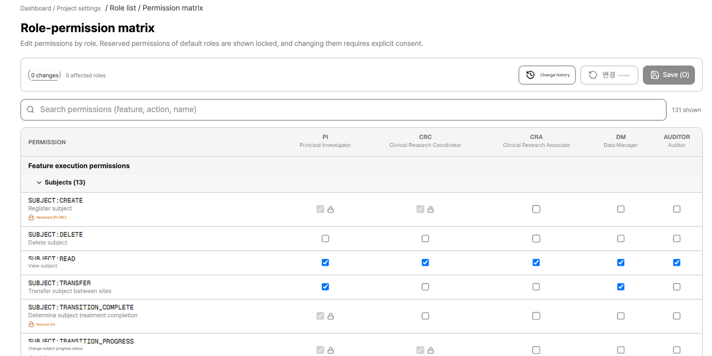
Search — narrows by permission name, function or action. This is the fastest way when you do not know which group a permission is in.
“Change history” — shows when and how permissions were changed 4.3.
“Save (N)” — applies your changes. The number in brackets is the number of edited cells, and when it is 0 the button cannot be clicked. To undo, click “Cancel changes” on the left.
The subtitle states the rule in advance: “Reserved permissions of default roles are shown locked, and changing them requires explicit consent.”
N changes · N affected roles — check here how many roles will be affected before you save.
N shown — the number of permissions visible now. Searching reduces this number.
The columns are the roles — the screenshot shows the five default roles (PI · CRC · CRA · DM · AUDITOR). Creating a custom role adds a column.
Domain groups — grouped like “Subjects (13)”, and can be collapsed or expanded.
Padlock + “Reserved” — a cell whose permission is a core permission of that role and cannot be released (see Precautions below).
Check boxes — click to turn them on or off. Edited cells are marked in color and reflected in the change count above.
Precautions
Must check Data corruption · Form cannot be completed
- • Locked cells have three different reasons. ① A core permission of a default role: just as the subject withdrawal permission cannot be removed from a principal investigator, a permission that makes the role what it is cannot be released (the screenshot’s “Reserved (PI,CRC)”). ② Platform-level permissions: these can never be granted to project roles. ③ Permissions reserved for system administrators only. However, in a custom role you created, ① is not locked and can be turned on. When you save, the “Confirm reserved permission change” window appears and asks you to consent once more. These permissions carry regulatory responsibility, so use them only when it is clear who needs them and why.
4.2Default role templates
Overview
This is a read-only screen that explains what each of the five default roles was originally for. Each role’s main responsibilities and the regulatory basis for those responsibilities are summarized in cards. Use it to check why each role holds its permissions before you adjust them. This is the original template, separate from project roles, so nothing changes on this screen.
Screen guide
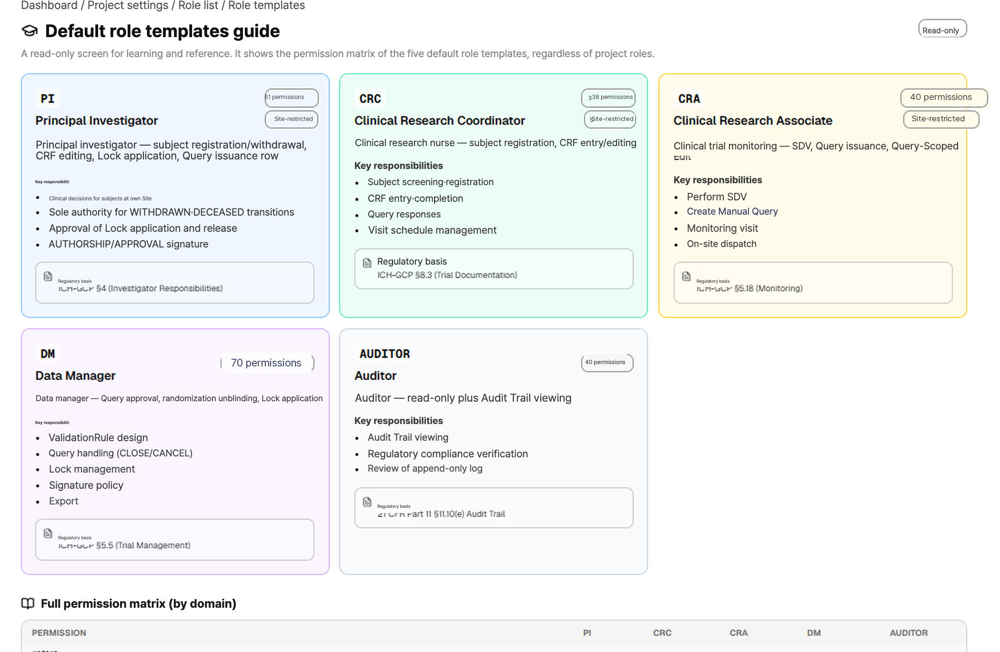
“Read-only” badge — you cannot edit anything on this screen.
Subtitle — “A read-only screen for learning and reference. It shows the permission matrix of the five default role templates, regardless of project-specific roles.”
The two badges on the right of each card show number of permissions and site restriction status. You can compare the number of permissions for each role at a glance here.
Main responsibilities — a short list of the work the role takes on.
Regulatory basis — states which regulation the responsibility comes from (e.g., ICH-GCP §4 Investigator Responsibilities). This is where to look for the basis when you reduce or add permissions.
Full permission matrix (by domain) — a table of the five roles × all permissions follows below the cards.
The columns in the table are also the five default roles, and each permission a role holds is marked with a green check. Unlike the editable matrix 4.1, it displays only and does not use check boxes.
Precautions
Easily misunderstood behavior
- • What this screen shows may differ from the actual permissions in our project. This is the original set by the system. If you adjusted permissions in the project, the actual values are in the role-permission matrix 4.1. To check what applies now, look at 4.1; to check what each role originally was, look at this screen. When you receive a question about permissions, open both screens together to see the difference between the original and the current setup, which lets you estimate when things changed. Check the exact change time in the history 4.3.
4.3Role change history
Overview
A screen for reviewing when, for whom, and from what to what roles and assignments were changed. It is append-only, so a line once recorded cannot be edited or deleted. If something was recorded wrongly, you correct it by adding a new line that fixes it. By default the screen shows the history of person assignments, and changes to roles themselves are shown separately at the bottom.
Screen guide
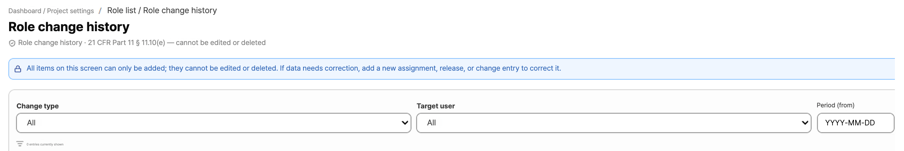
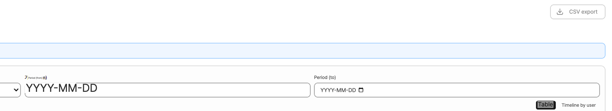
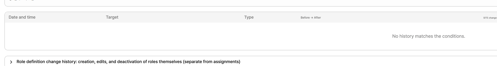
Change type · Target user — narrow down by the kind of change and the person it concerns.
“CSV export” — saves the items visible on this screen as a file.
Period (from) — from this date.
Period (to) — up to this date.
“Table” / “Timeline by user” — choose whether to view as a table or as entries grouped by person in time order. The timeline is convenient when you want to see how one person’s roles moved over time.
The subtitle states the nature of this screen: 21 CFR Part 11 § 11.10(e) · Cannot be edited or deleted.
Blue notice — “All items on this screen can only be added; they cannot be edited or deleted. If data needs correcting, add a new assignment, release or change entry to correct it.”
Currently showing N records — the number of records that match the filter.
The table has 7 columns — Date and time · Target · Type · Previous → New · SITE change · Reason · Performed by. The Reason column shows the reason written at assignment, exactly as it was entered 3.2.
“Role definition change history” — expanding the collapsed section shows creation, editing and deactivation of the roles themselves. Because it is separate from the assignment history, look here when you want to find when permissions changed.
Precautions
Must check Data corruption · Form cannot be completed
- • Only auditors and workspace administrators can enter this screen. However, the “History” button on the role list screen is visible to everyone. If a principal investigator or data manager clicks it, the page does move, but they are stopped by a permission notice on entering. A visible button does not mean you have access, so if you need the history, ask an auditor or workspace administrator. History can be delivered with “CSV export”, but the range you hand over is limited to the items visible on this screen, so set the period filter first, then export.